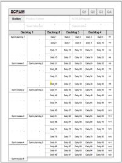
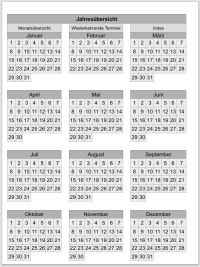
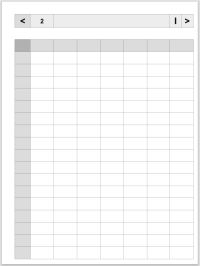
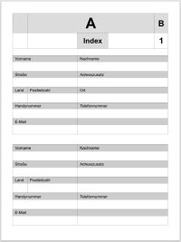
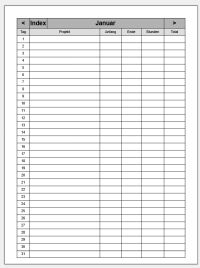

SCRUM Quartal

Ein PDF, das ein Quartal in SCRUM planen kann.
Alljährlicher Kalender

Hier ein PDF für ein Alljährlichen Kalender. Dieser kann für jährlich wiederholende Termine (z.B. Geburtstage) verwendet werden.
Einzelne Sachen wie zum Beispiel die Monate verfügen über Hyperlinks.
Wochenplaner

Ein einfaches PDF, das einen Wochenplaner (oder Stundenplan) beinhaltet.
Adressbuch

Der erste Versuch eines Adressbuches mit Hyperlinks als PDF. Anfangs ein paar Seiten für
Arzt Adressen.
Arbeitszeiten

Arbeitszeiten PDF mit Hyperlinks, Monatlicher Übersicht und Zeiten können pro Tag eingetragen werden.
Eine Spalte für den Projektnamen oder Stichwort, was an dem Tag gemacht wurde.